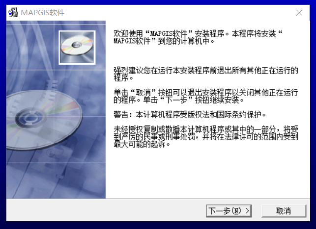
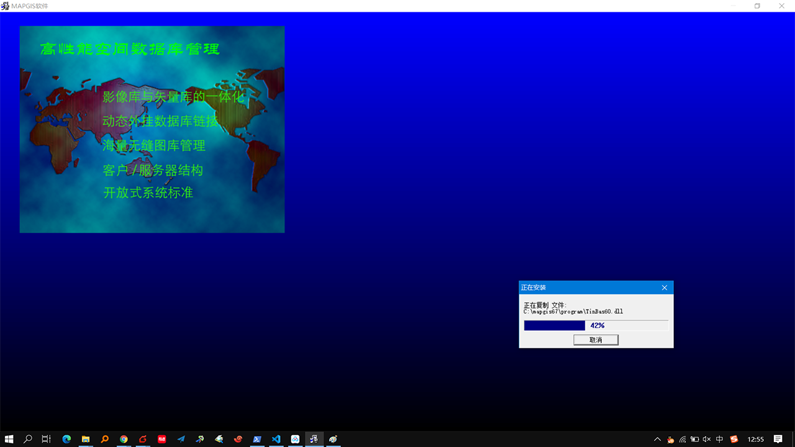
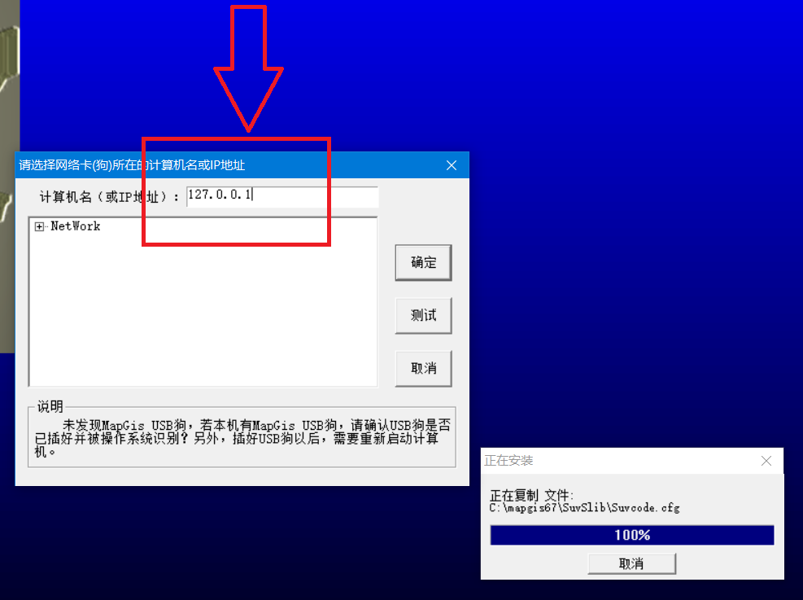
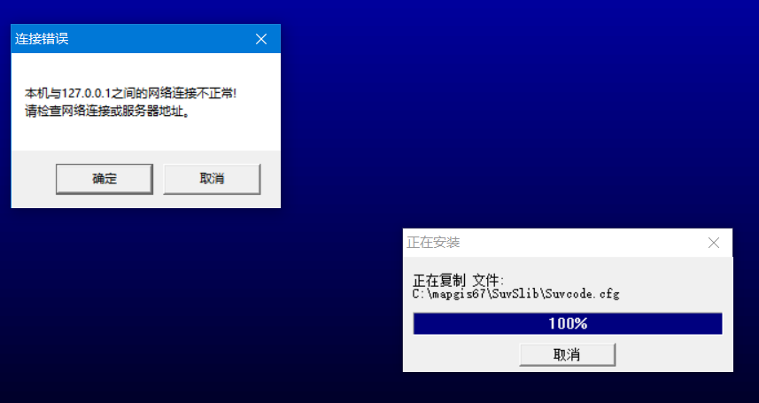
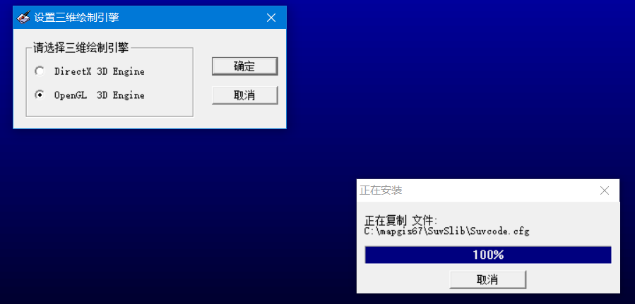
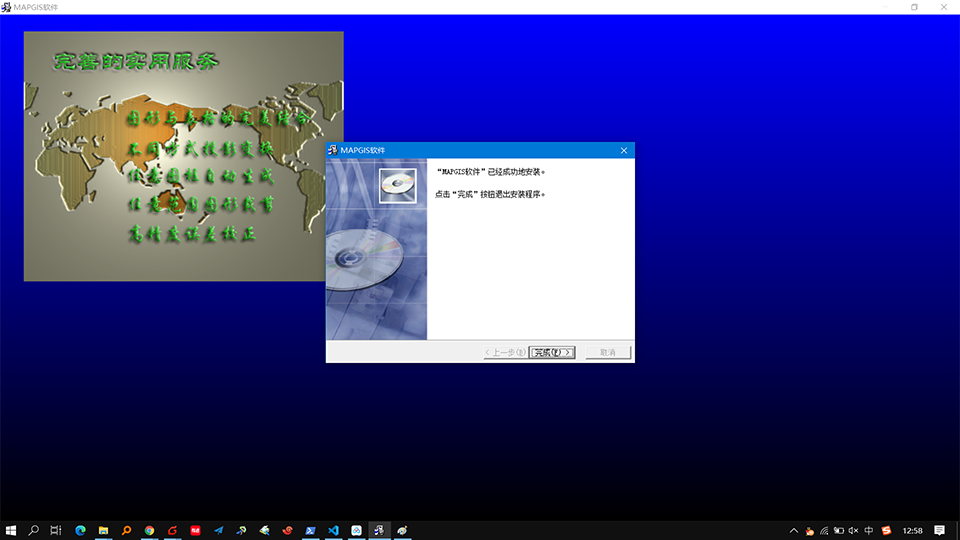

安装 (45分钟)
- 下载并解压，链接 百度网盘 提取码：
vbox - 双击运行
MapGIS安装程序Setup67.EXE
- 点击下一步

- 直到弹出如下界面 计算机名或者IP地址填入
127.0.0.1
- 双击运行虚拟狗
DogServer67.exe右下角出现虚拟狗图标，点击确定
- 弹出三维绘制引擎选择
OpenGL 3D，确定
- 弹出如下界面，点击完成，安装成功。

- 桌面上双击如下图标，打开
MAPGIS67主菜单